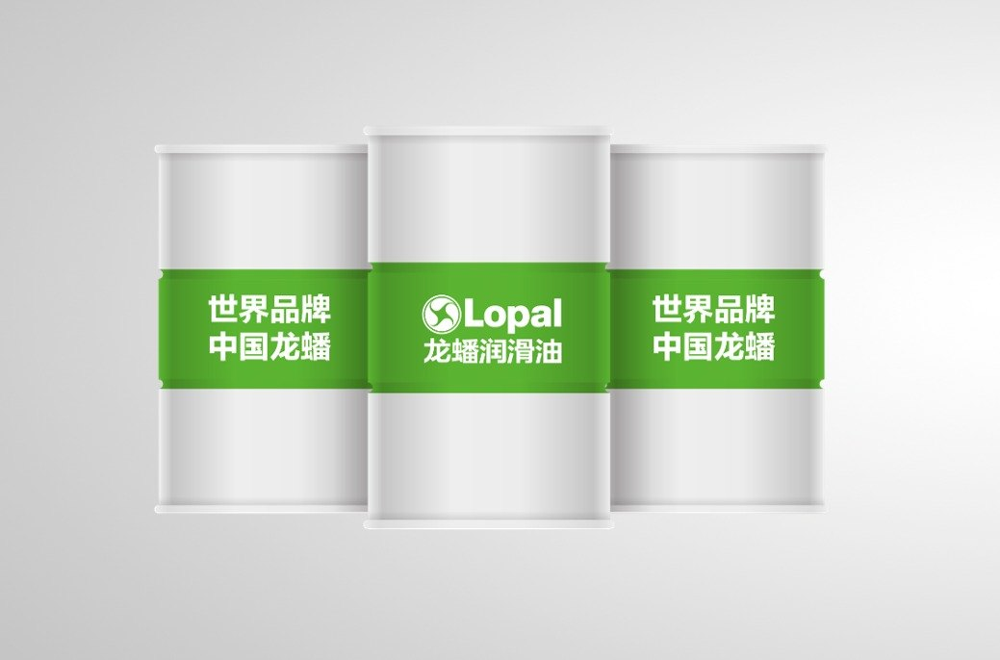

API GL-5
Класс для трансмиссий, работающих под высокими давлениями и ударными нагрузками.
Высококачественное трансмиссионное масло API GL-5 для тяжёлых режимов (高性能齿轮油).

Фото — официальные материалы lopal.cn (страница продукта). Перед публикацией сверить упаковку и допуски с действующими TDS.
Трансмиссионные масла · Трансмиссионное масло (齿轮油)
Трансмиссионное масло Lopal DuraGear G500 (龙蟠齿神) класса API GL-5 для механических коробок передач и ведущих мостов коммерческой техники: прочная масляная плёнка под высокими контактными нагрузками, защита шестерён от задиров и износа.
Класс для трансмиссий, работающих под высокими давлениями и ударными нагрузками.
Противозадирный пакет для гипоидных передач и шестерён.
Сохранение прочности масляной плёнки при рабочем нагреве.
Удобный формат для сервисов и автопарков.
| Наименование | Lopal DuraGear G500 (龙蟠齿神 G500) |
|---|---|
| Тип | Трансмиссионное масло для механических трансмиссий |
| Класс по API | GL-5 |
| Назначение | МКПП и ведущие мосты коммерческой техники |
| Фасовка | 18 л |
Характеристики приведены по этикеткам официального продукта на lopal.cn. Перед публикацией значения сверяются с официальными TDS и подтверждаются заказчиком.
PDF · будет добавлен после переноса с lopal.cn
PDF · будет добавлен после переноса с lopal.cn
Список официальных дистрибьюторов и точек продаж Lopal в Казахстане размещается в разделе «Партнёрам». Для B2B-запросов воспользуйтесь формой обращения.